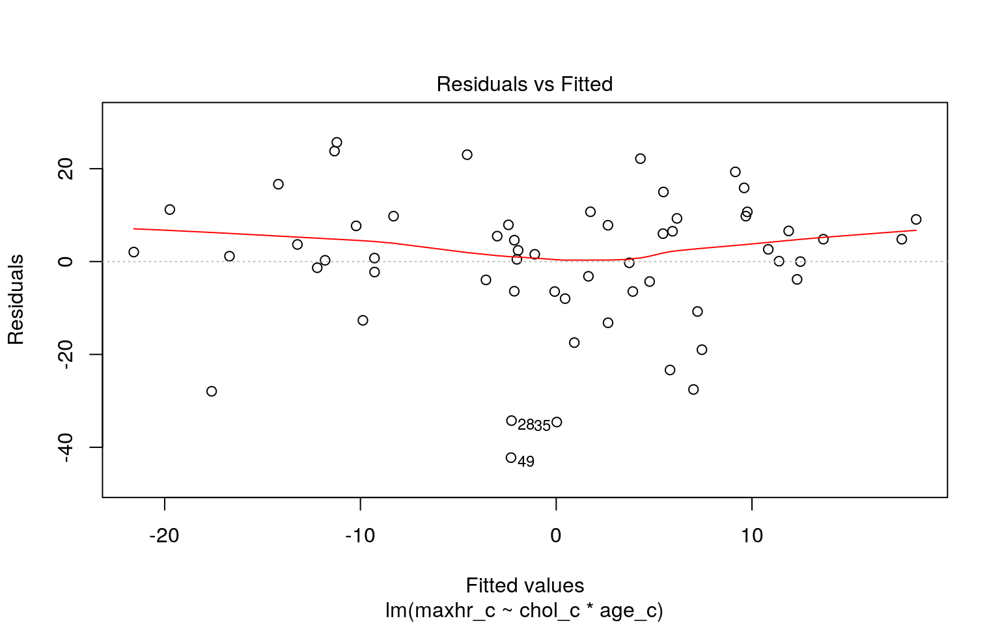
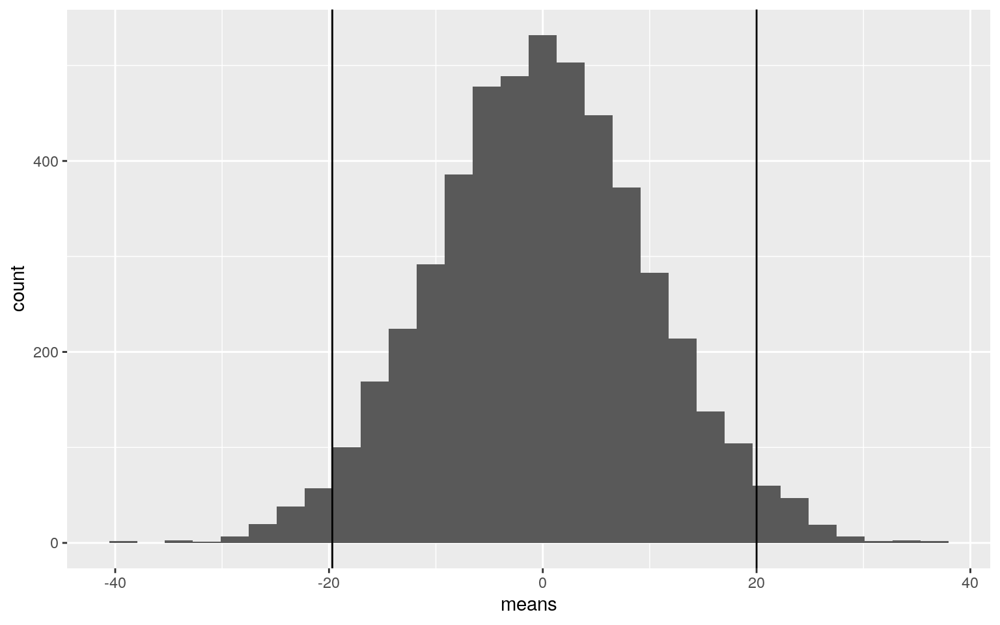

January 1, 0001
My data is revolved around the vitals of individuals that could be at risk for heart complications. The dataset contains their age, sex, chest pain level, resting blood pressure, chlorestrol levels, maximum heart rate, and if they have excercise induced angina. There is a total of 7 variables and 58 observations. The categorical variable is the chest pain variable. There are four groups. The individual reports that they either have mild, moderate, severe, or no chest pain. There are two binary variables. The binary variables are sex and excercise induced angina. For the sex variable, 1 means male and 0 means female. For the excercise induced angina, 1 means that the patient does excercise induced angina. 0 means that the patient does not have excercise induced angina. Excercise induced angina means that there was a chest pain caused by a reduction of blood flow to the heart after physical activity. The other four variables are numeric.
Dataset
heart <- read.csv("heartdata.csv")
library(tidyr)
library(ggplot2)
library(lmtest)
library(dplyr)
library(tidyverse)Question 1
mancp <- manova(cbind(restbp, maxhr)~chestpain, data=heart)
summary(mancp)## Df Pillai approx F num Df den Df Pr(>F)
## chestpain 3 0.22123 2.2387 6 108 0.0448 *
## Residuals 54
## ---
## Signif. codes: 0 '***' 0.001 '**' 0.01 '*' 0.05 '.' 0.1
' ' 1#Unvariate
summary.aov(mancp)## Response restbp :
## Df Sum Sq Mean Sq F value Pr(>F)
## chestpain 3 864.7 288.25 1.4488 0.2388
## Residuals 54 10743.7 198.96
##
## Response maxhr :
## Df Sum Sq Mean Sq F value Pr(>F)
## chestpain 3 2654.7 884.90 3.2578 0.02845 *
## Residuals 54 14667.7 271.62
## ---
## Signif. codes: 0 '***' 0.001 '**' 0.01 '*' 0.05 '.' 0.1
' ' 1#T-Test
t_test <- heart%>%group_by(chestpain)%>%summarize(mean(restbp), mean(maxhr))
t_test## # A tibble: 4 x 3
## chestpain `mean(restbp)` `mean(maxhr)`
## <fct> <dbl> <dbl>
## 1 Mild 129 170.
## 2 Moderate 137. 158.
## 3 None 129. 161.
## 4 Severe 137. 146.#Post-Hoc Test
pairwise.t.test(heart$restbp, heart$chestpain, p.adj="none")##
## Pairwise comparisons using t tests with pooled SD
##
## data: heart$restbp and heart$chestpain
##
## Mild Moderate None
## Moderate 0.14 - -
## None 0.97 0.11 -
## Severe 0.24 0.93 0.21
##
## P value adjustment method: nonepairwise.t.test(heart$maxhr, heart$chestpain, p.adj="none")##
## Pairwise comparisons using t tests with pooled SD
##
## data: heart$maxhr and heart$chestpain
##
## Mild Moderate None
## Moderate 0.0360 - -
## None 0.1706 0.5557 -
## Severe 0.0037 0.1060 0.0609
##
## P value adjustment method: none#Probability of at least 1 Type One error
1-(0.95^5)## [1] 0.2262191#Bonferroni's Correction
0.05/5## [1] 0.01#Assumptions
library(rstatix)
group <- heart$chestpain
DVs <- heart %>% select(restbp,maxhr)
#Test multivariate normality for each group (null: assumption met)
sapply(split(DVs,group), mshapiro_test)## Mild Moderate None Severe
## statistic 0.9154116 0.9542544 0.9100669 0.8924878
## p.value 0.2822555 0.2713907 0.183772 0.2878937#If any p<.05, stop (assumption violated). If not, test homogeneity of covariance matrices
#Box's M test (null: assumption met)
box_m(DVs, group)## # A tibble: 1 x 4
## statistic p.value parameter method
## <dbl> <dbl> <dbl> <chr>
## 1 6.56 0.683 9 Box's M-test for Homogeneity of
Covariance Matrices#Optionally, view covariance matrices for each group
lapply(split(DVs,group), cov)## $Mild
## restbp maxhr
## restbp 193.0 -53.3000
## maxhr -53.3 100.4727
##
## $Moderate
## restbp maxhr
## restbp 211.01994 19.13675
## maxhr 19.13675 310.56410
##
## $None
## restbp maxhr
## restbp 169.52564 24.26923
## maxhr 24.26923 233.24359
##
## $Severe
## restbp maxhr
## restbp 215.47619 40.11905
## maxhr 40.11905 464.90476Findings from Question 1: I ran a MANOVA test to see if my numeric variables had an effect on my categorial variable "chestpain." Initially, I wanted to observe the effect of all my numeric variables on chest pain; however, the MANOVA output produced an insignificant effect. I wanted to see if any combination of my numeric variable produced a significant effect. The combination of resting blood pressure and maximum heart rate produced a significant effect. I then performed a univariate ANOVA test to see which of the variables were causing the significant results. It was the maximum heart rate group that was causing the significant effect. This is not surprising since rapid heart rates are known to cause a discomfort in the chest. In total, I ran 5 tests. The overall Type I error was equal to 0.05, as usual. The probability that at least one Type I error would occur was 0.23. The Bonferroni’s Correction shifted p value from 0.05 to 0.01. After the correction, we can no longer conclude that the effect is significant since the p-value of maximum heart rate was 0.02845 which is larger than the corrected value (0.01.) In regard to the assumptions, when the multivariate normality test was run for each group, all p values were above 0.05 which meant that no assumptions were violated. I continued on to run the Box’s M test where I also received a large p value (larger than 0.05). This means that we cannot reject the null hypothesis and that the observed covariance matrices for the dependent variables are equal across groups.
Question 2
cor(heart$age,heart$restbp)## [1] 0.3075643summary(aov(age~restbp,data=heart))## Df Sum Sq Mean Sq F value Pr(>F)
## restbp 1 380 380.1 5.851 0.0188 *
## Residuals 56 3638 65.0
## ---
## Signif. codes: 0 '***' 0.001 '**' 0.01 '*' 0.05 '.' 0.1
' ' 1library(vegan)
dists<-heart%>%select(age,restbp)%>%dist()
adonis(dists~chestpain,data=heart)##
## Call:
## adonis(formula = dists ~ chestpain, data = heart)
##
## Permutation: free
## Number of permutations: 999
##
## Terms added sequentially (first to last)
##
## Df SumsOfSqs MeanSqs F.Model R2 Pr(>F)
## chestpain 3 1170.2 390.08 1.4571 0.07489 0.202
## Residuals 54 14456.8 267.72 0.92511
## Total 57 15627.0 1.00000SST<- sum(dists^2)/150
SSW<-heart%>%group_by(chestpain)%>%select(age,restbp)%>%do(d=dist(.[2:3],"euclidean"))%>%ungroup()%>%summarize(sum(d[[1]]^2)/50 +
sum(d[[2]]^2)/50+ sum(d[[2]]^2)/50)%>%pull
F_obs <- ((SST-SSW)/3)/(SSW/54)
Fs <- replicate(1000, {
new <- heart%>%mutate(chestpain= sample(chestpain))
SSW <- SW<-new%>%group_by(chestpain)%>%select(age,restbp)%>%do(d=dist(.[2:3],"euclidean"))%>%ungroup()%>%
summarize(sum(d[[1]]^2)/50 + sum(d[[2]]^2)/50+ sum(d[[2]]^2)/50)%>%pull
((SST-SSW)/3)/(SSW/54)
})
{hist(Fs, prob=T);abline(v=F_obs, col="blue", add=T)}
mean(Fs>F_obs)## [1] 0.471Findings from Question 2: For the randomization test, I chose to compare if the age of the patient correlated with their resting blood pressure. I first computed the actual correlation between the variables. The correlation value was 0.307 which signifies that there is a weak, positive correlation between variables. Generally, as age of the patient increases, their resting blood pressure also increases. I then conducted a randomization test and replicated the sample 1000 times to get as much of the randomization effect as possible. The null hypothesis was that age and resting blood pressure are not correlated and both variables act independently of each other. In contrast, the alternative hypothesis was that age indeed affected the resting blood pressure of the patient. The actual mean difference is 0.486 which is large and means that we cannot reject the null hypothesis. The F_obs value was -4.77 and some of the 1000 F statistics that we generated were larger than the F_obs. Therefore, we cannot reject the null hypothesis and can conclude that age has an insignificant effect on the resting blood pressure. In regard to the relative frequency histogram of Fs, it is skewed to the left with a mean about -5.
Question 3
#Mean Centering Age, Chol, and Maxhr Variables
age_c <- heart$age-mean(heart$age, na.rm=T)
chol_c <- heart$chol-mean(heart$chol, na.rm=T)
maxhr_c <- heart$maxhr-mean(heart$maxhr, na.rm=T)
fit2 <- lm(maxhr_c~chol_c*age_c, data = heart)
summary(fit2)##
## Call:
## lm(formula = maxhr_c ~ chol_c * age_c, data = heart)
##
## Residuals:
## Min 1Q Median 3Q Max
## -42.226 -5.872 1.802 8.783 25.671
##
## Coefficients:
## Estimate Std. Error t value Pr(>|t|)
## (Intercept) -0.378638 2.040596 -0.186 0.853
## chol_c 0.067642 0.042174 1.604 0.115
## age_c -1.162980 0.245930 -4.729 1.66e-05 ***
## chol_c:age_c 0.003238 0.004616 0.701 0.486
## ---
## Signif. codes: 0 '***' 0.001 '**' 0.01 '*' 0.05 '.' 0.1
' ' 1
##
## Residual standard error: 14.99 on 54 degrees of freedom
## Multiple R-squared: 0.2998, Adjusted R-squared: 0.2609
## F-statistic: 7.707 on 3 and 54 DF, p-value: 0.0002241coeftest(fit2)##
## t test of coefficients:
##
## Estimate Std. Error t value Pr(>|t|)
## (Intercept) -0.3786377 2.0405963 -0.1856 0.8535
## chol_c 0.0676418 0.0421743 1.6039 0.1146
## age_c -1.1629802 0.2459301 -4.7289 1.66e-05 ***
## chol_c:age_c 0.0032375 0.0046161 0.7014 0.4861
## ---
## Signif. codes: 0 '***' 0.001 '**' 0.01 '*' 0.05 '.' 0.1
' ' 1#Predicting MaxHr from Chol and Age
library(interactions)
interact_plot(fit2, pred = chol_c, modx = age_c)#Linearity, Normality, Homoskedasticity
shapiro.test(age_c)##
## Shapiro-Wilk normality test
##
## data: age_c
## W = 0.97545, p-value = 0.2871shapiro.test(chol_c)##
## Shapiro-Wilk normality test
##
## data: chol_c
## W = 0.95461, p-value = 0.02976shapiro.test(maxhr_c)##
## Shapiro-Wilk normality test
##
## data: maxhr_c
## W = 0.96174, p-value = 0.06465plot(fit2)
#Recompute Regression
library(sandwich)
library(lmtest)
coeftest(fit2,vcov=vcovHC(fit2, family='binomial'(link='logit')))##
## t test of coefficients:
##
## Estimate Std. Error t value Pr(>|t|)
## (Intercept) -0.3786377 2.0714526 -0.1828 0.85565
## chol_c 0.0676418 0.0401094 1.6864 0.09748 .
## age_c -1.1629802 0.2173156 -5.3516 1.823e-06 ***
## chol_c:age_c 0.0032375 0.0035017 0.9246 0.35931
## ---
## Signif. codes: 0 '***' 0.001 '**' 0.01 '*' 0.05 '.' 0.1
' ' 1#Variation
summary(fit2)$r.sq## [1] 0.2998147Findings from Question 3: I chose to predict the maximum heart rate variable from the cholesterol and age variable. First, I centered the three aforementioned variables. The intercept coefficient means that the predicted maximum heart rate for all patients is -0.37 when chol_c and age_c is 0. The coefficient for chol_c means that for every 1 unit increase in chol, there is a 0.067 increase in maximum heart rate. The coefficient for age_c means that for every 1 unit increase in age, the maximum heart rate decreases by a value of -1.16. The coefficient chol_c:age_c means that the effect of chol_c on age_c is greater than the effect of age_c on chol_c. In regard to the regression plot, it shows that the chol_c variable affects the value of maximum heart rate more than the age_c. At greater ages (+1 SD), the decrease in maximum heart rate was steeper than if the ages were at mean value or lower values. Therefore, the chol_c variable has a more significant effect on decreasing maximum heart rate levels. When regression results were recomputed, there were no significant changes. The p-values for the variables and the interaction variables changed but the significance of age_c persisted. In regard to the proportion of variation, my model explains 0.299 of the proportion of the variation of the outcome.
Question 4
#Rerunning Regression and Bootstrapping
boot <- maxhr_c%>%sort+ chol_c%>%sort+ age_c%>%sort
summary(boot)## Min. 1st Qu. Median Mean 3rd Qu. Max.
## -166.76 -51.01 -10.26 0.00 40.24 217.24sd(boot)## [1] 76.54292boot%>%mean## [1] -6.39766e-15sample1 <- sample(boot, replace=T)
sort(sample1)## [1] -166.758621 -136.758621 -120.758621 -103.758621
-85.758621 -74.758621 -74.758621 -72.758621
## [9] -72.758621 -71.758621 -67.758621 -62.758621
-62.758621 -57.758621 -48.758621 -43.758621
## [17] -40.758621 -40.758621 -40.758621 -40.758621
-40.758621 -35.758621 -35.758621 -28.758621
## [25] -28.758621 -18.758621 -14.758621 -14.758621
-10.758621 -4.758621 5.241379 10.241379
## [33] 29.241379 29.241379 33.241379 37.241379 37.241379
37.241379 37.241379 37.241379
## [41] 41.241379 41.241379 41.241379 41.241379 46.241379
46.241379 46.241379 51.241379
## [49] 84.241379 84.241379 85.241379 89.241379 94.241379
107.241379 113.241379 113.241379
## [57] 132.241379 217.241379mean(sample1)## [1] 0.8275862means<-vector()
for(i in 1:5000){ samp<-sample(boot,replace=T)
means[i]<-mean(samp)
}
quantile(means,c(0.025,0.975))## 2.5% 97.5%
## -19.31034 19.05216ggplot()+geom_histogram(aes(means))+geom_vline(xintercept=quantile(means,c(.025,.975)))
#Bootstrapped SEs
sd(means)## [1] 9.925148ggplot()+geom_histogram(aes(means))+ geom_vline(xintercept=mean(means)+c(-1,1)*sd(means))Findings for Question 4: When I reran the regression and bootstrapped, the range of the means decreased. As the mean range increased, the standard deviation value decreased. The standard deviation of the sampling distribution, which is equal to the bootstrapped standard error, is 10.03. This is much greater value than the regular and robust standard errors.
Question 5
data1 <-heart%>%mutate(y=ifelse(excangina=="Yes",1,0))
pred <-glm(excangina~restbp+maxhr,data=data1,family='binomial'(link="logit"))
coeftest(pred)##
## z test of coefficients:
##
## Estimate Std. Error z value Pr(>|z|)
## (Intercept) 5.917639 4.950265 1.1954 0.2319
## restbp -0.035681 0.028570 -1.2489 0.2117
## maxhr -0.019519 0.020947 -0.9319 0.3514exp(coef(pred))## (Intercept) restbp maxhr
## 371.5335931 0.9649482 0.9806698#Confusiaon Matrix
prob <-predict(pred,type="response")
pred1<-ifelse(prob>.5,1,0)
table(predict=as.numeric(prob>.5), truth=data1$excangina) %>%addmargins## truth
## predict 0 1 Sum
## 0 50 8 58
## Sum 50 8 58#Accuracy
50/58## [1] 0.862069#TPR
50/58## [1] 0.862069#TNR
0/58## [1] 0#PPV
50/50## [1] 1#predicted logit (log-odds)
predict(pred, newdata=data.frame(restbp=10,maxhr=10), type="link")## 1
## 5.365637#predicted probability
predict(pred, newdata=data.frame(restbp=10,maxhr=10), type="response")## 1
## 0.9953473#ggplot
data1$logit<-predict(pred,type="link")
data1%>%ggplot(aes(logit,color=excangina,fill=excangina))+
geom_density(alpha=.4, color="blue", fill="yellow", linetype="dashed")+
geom_vline(xintercept=0)+xlab("logit")+theme(legend.position=c(.85,.85))#ROC Plot
library(plotROC)
ROCplot<-ggplot(data1)+geom_roc(aes(d=excangina, m=prob), n.cuts=0)
ROCplot#AUC Calculation
calc_auc(ROCplot)## PANEL group AUC
## 1 1 -1 0.61875Findings for Question 5: From the coefficient estimates, we can conclude that resting blood pressure and maximum heart rate do not have a significant effect on whether a patient does or does not have angina due to exercise. When controlling for maximum heart rate, for every 1 unit increase in resting blood pressure, the odds for having angina due to exercise decreases by a factor of 0.036. When controlling for resting blood pressure, for every 1 unit increase in maximum heart rate, the odds for having angina due to exercise decreases by a factor of 0.02. Based on these two values, we can conclude that resting blood pressure has a larger effect on whether a patient has angina in comparison to maximum heart rate; however, none of the variables effects are strong enough to be considered significant. Referencing to methods on the class slides, accuracy (0.862), sensitivity (0.862), specificity (0), and precision (1) was calculated. A ROC plot was then generated, and an AUC value was calculated. Based on the AUC value, the area under the curve is equal to 0.619.
Question 6
#Fit model, compute in-sample classification diagnostics (Accuracy, Sensitivity, Specificity, Precision, AUC), and interpret (5)
finalfit <- glm(excangina~age+sex+chestpain+restbp+chol+maxhr, data = heart, family = binomial(link = "logit"))
coeftest(finalfit)##
## z test of coefficients:
##
## Estimate Std. Error z value Pr(>|z|)
## (Intercept) -6.7375e+00 3.0254e+03 -0.0022 0.9982
## age -9.8036e-02 7.3610e-02 -1.3318 0.1829
## sex 5.3398e-01 1.0425e+00 0.5122 0.6085
## chestpainModerate 1.7813e+01 3.0254e+03 0.0059 0.9953
## chestpainNone 1.7975e+01 3.0254e+03 0.0059 0.9953
## chestpainSevere 2.0361e+01 3.0254e+03 0.0067 0.9946
## restbp -4.5956e-02 3.6171e-02 -1.2705 0.2039
## chol 2.8879e-03 1.1177e-02 0.2584 0.7961
## maxhr -1.9737e-02 2.9089e-02 -0.6785 0.4974probs <- predict(finalfit,type = "response")
table(predict=as.numeric(probs>.5), truth=heart$excangina)%>%addmargins## truth
## predict 0 1 Sum
## 0 50 4 54
## 1 0 4 4
## Sum 50 8 58#Accuracy
(50+4)/58## [1] 0.9310345#TPR
50/54## [1] 0.9259259#TNR
4/4## [1] 1#PPV
50/50## [1] 1#ROC Plot
library(plotROC)
ROCplot<-ggplot(data1)+geom_roc(aes(d=excangina, m=probs), n.cuts=0)
ROCplot#AUC Calculation
calc_auc(ROCplot)## PANEL group AUC
## 1 1 -1 0.785#Perform 10-fold (or repeated random sub-sampling) CV with the same model and report average out-of-sample classification diagnostics (Accuracy, Sensitivity, Specificity, Precision, and AUC); interpret AUC and compare with the in-sample metrics (10)
## GIVE IT PREDICTED PROBS AND TRUTH LABELS (0/1), RETURNS VARIOUS DIAGNOSTICS
class_diag <- function(probs,truth){
#CONFUSION MATRIX: CALCULATE ACCURACY, TPR, TNR, PPV
if(is.character(truth)==TRUE) truth<-as.factor(truth)
if(is.numeric(truth)==FALSE & is.logical(truth)==FALSE) truth<-as.numeric(truth)-1
tab<-table(factor(probs>.5,levels=c("FALSE","TRUE")),factor(truth, levels=c(0,1)))
acc=sum(diag(tab))/sum(tab)
sens=tab[2,2]/colSums(tab)[2]
spec=tab[1,1]/colSums(tab)[1]
ppv=tab[2,2]/rowSums(tab)[2]
f1=2*(sens*ppv)/(sens+ppv)
#CALCULATE EXACT AUC
ord<-order(probs, decreasing=TRUE)
probs <- probs[ord]; truth <- truth[ord]
TPR=cumsum(truth)/max(1,sum(truth))
FPR=cumsum(!truth)/max(1,sum(!truth))
dup<-c(probs[-1]>=probs[-length(probs)], FALSE)
TPR<-c(0,TPR[!dup],1); FPR<-c(0,FPR[!dup],1)
n <- length(TPR)
auc<- sum( ((TPR[-1]+TPR[-n])/2) * (FPR[-1]-FPR[-n]) )
data.frame(acc,sens,spec,ppv,f1,auc)
}
#Ten-Fold
set.seed(1234)
k=10
data2<-heart[sample(nrow(heart)),]
folds<-cut(seq(1:nrow(heart)),breaks=k,labels=F)
diags<-NULL
for(i in 1:k){
train<-data2[folds!=i,]
test<-data2[folds==i,]
truth<-test$excangina
fitt1<-glm(excangina~age+sex+chestpain+restbp+chol+maxhr,data=train,family="binomial")
probs<-predict(fitt1,newdata = test,type="response")
diags<-rbind(diags,class_diag(probs,truth))
}
summarize_all(diags,mean)## acc sens spec ppv f1 auc
## 1 0.85 NaN 0.9633333 NaN NaN 0.54#Perform LASSO on the same model/variables. Choose lambda to give the simplest model whose accuracy is near that of the best (i.e., `lambda.1se`). Discuss which variables are retained. (5)
#LASSO
library(glmnet)
y<-as.matrix(heart$excangina) #grab response
x<-model.matrix(excangina~age+sex+chestpain+restbp+chol+maxhr,data=data2)[,-1] #grab predictors
x <- scale(x)
head(x)## age sex chestpainModerate chestpainNone chestpainSevere
restbp chol
## 28 -0.2484615 0.8036248 1.0622394 -0.5328302 -0.3672716
-1.6442990 -1.3736954
## 16 -0.3675587 -1.2229073 1.0622394 -0.5328302 -0.3672716
-0.9435691 -0.5240418
## 22 -1.0821422 0.8036248 1.0622394 -0.5328302 -0.3672716
-0.2428392 -0.2536975
## 37 0.1088302 -1.2229073 1.0622394 -0.5328302 -0.3672716
0.1075258 1.1173344
## 44 -0.0102670 -1.2229073 -0.9251762 1.8444123 -0.3672716
-0.2428392 0.3449221
## 47 -1.0821422 0.8036248 1.0622394 -0.5328302 -0.3672716
0.4578908 -0.2150769
## maxhr
## 28 -2.09573309
## 16 -0.08802277
## 22 1.11660343
## 37 0.60033506
## 44 -0.94847005
## 47 1.17396658cv<-cv.glmnet(x,y,family="binomial")
lasso<-glmnet(x,y,family="binomial",lambda=cv$lambda.min)
coef(lasso)## 9 x 1 sparse Matrix of class "dgCMatrix"
## s0
## (Intercept) -1.832581
## age 0.000000
## sex .
## chestpainModerate .
## chestpainNone .
## chestpainSevere .
## restbp .
## chol .
## maxhr .#Perform 10-fold CV using only the variables lasso selected: compare model's out-of-sample AUC to that of your logistic regressions above (5)
set.seed(1234)
k=10
data3<-heart[sample(nrow(heart)),]
folds1<-cut(seq(1:nrow(data3)),breaks=k,n=10)
diags1<-NULL
for(i in 1:k){
train1<-data3[folds!=i,]
test1<-data3[folds==i,]
truth1<-test1$excangina
fitt3<-glm(excangina~age, data = train1,family="binomial")
probs<-predict(fitt3,newdata = test1,type="response")
diags1<-rbind(diags1,class_diag(probs,truth1))
}
diags1%>%summarize_all(mean)## acc sens spec ppv f1 auc
## 1 0.8633333 NaN 1 NaN NaN 0.48Findings for Question 6: For this question, I performed a logistic regression where I predicted the same binary variable (excangina) from the rest of my variables. My in-sample classification diagnostics are as follows: accuracy had a value of 0.931 ,sensitivity had a value of 0.926, specificity had a value of 1, and precision had a value of 1. Based on the AUC value, the area under the curve is equal to 0.785. I then performed a 10-Fold where I retrieved an accuracy value of 0.85, sensitivity value of NaN, specificity value of 0.963, precision value of NaN, and AUC value of 0.54. Excluding the specificity value, all the others value changed drastically after the 10-Fold was computed. The evident decrease in the diagnostic values led to a significant decrease in the AUC value.I then ran a LASSO regression which indicated that the variable most affecting excangina is age. The age variable was still being retained at a very small coefficient estimate. A 10-Fold was again performed using only the variables that LASSO selected. The only variable, as mentioned, was age. The out-of-sample AUC value was 0.48 which is significantly smaller than the in-sample AUC value. of 0.785 In comparison to the first 10-Fold, the AUC value decreased from 0.54 to 0.48 and the specificity value increased from 0.963 to 1. The accuracy value increased slightly and the sensitivity and precision value remained NaN.